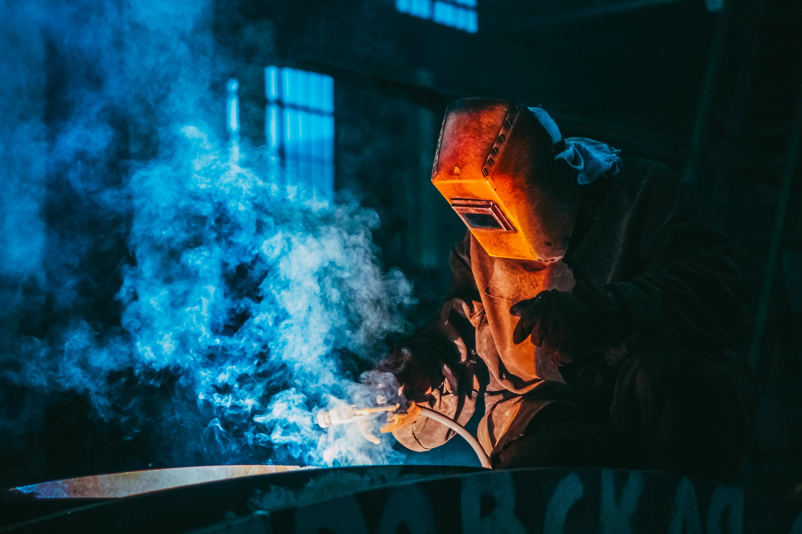
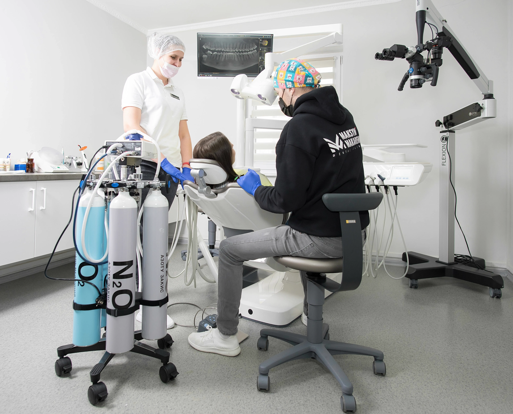

Gazy techniczne i spawalnicze
Zajmujemy się kompleksową budową i wykonawstwem systemów m.in. dla tlenu, acetylenu, dwutlenku węgla, amoniaku, sprężonego powietrza oraz specjalistycznych mieszanek spawalniczych. Wykorzystujemy najwyższej klasy materiały, takie jak miedź oraz stal węglowa i nierdzewna.
Nasi specjaliści - certyfikowani monterzy i spawacze (uprawnienia WPS i BPS) - gwarantują bezawaryjną i bezpieczną eksploatację. Projektujemy instalacje spawalnicze (TIG, MIG/MAG) dostarczające gazy palne i osłonowe, które są fundamentem produkcji w stoczniach, warsztatach i parkach maszynowych. Oferujemy również profesjonalny montaż zbiorników kriogenicznych.

Instalacje laboratoryjne i medyczne
Projektujemy i wdrażamy wysoce precyzyjne systemy przesyłu azotu, helu, argonu. Zapewniamy kompletną infrastrukturę: od generatorów, sprężarek i stanowisk butlowych, po rurociągi, reduktory oraz armaturę odcinającą i pomiarową.
Nasze zaawansowane technologicznie rozwiązania wspierają nie tylko nowoczesne laboratoria, ale przede wszystkim ratują życie w medycynie. Specjalizujemy się w kluczowych instalacjach tlenowych, niezbędnych na oddziałach anestezjologii, przy resuscytacji, utrzymaniu organów do transplantacji, a także w dynamicznie rozwijającej się tlenoterapii w komorach hiperbarycznych.

Realizacje w całej Polsce
Od samego początku istnienia firmy w 2004 roku naszym priorytetem jest najwyższa jakość, niezależnie od lokalizacji. Mimo że nasza siedziba mieści się na Śląsku, działamy i dojeżdżamy do klientów na terenie całego kraju.
Jeśli planujesz nową inwestycję przemysłową, modernizację zakładu lub budowę infrastruktury medycznej - zapraszamy do współpracy. Zapewniamy profesjonalne doradztwo techniczne i gwarantujemy terminowe oddanie sprawnie działającej instalacji.